Практичний досвід · журнал «ДентАрт» 2020 №3
Усунення білих уражень за допомогою інфільтрації смолою
Treatment of White Lesions by Resin Infiltration
Вступ
Білі плями і білі ураження на передніх зубах можуть мати неестетичний вигляд, і пацієнти часто звертаються в клініку, щоб їх видалити. Існує багато способів лікування, від відбілювання в ліпшому випадку (Greenwall, 2009) до перекриття плями різними стоматологічними матеріалами — як більш інвазивної альтернативи, але було запропоновано нову менш інвазивну техніку інфільтрації смолою (Munoz і співавт., 2013).
Спочатку інфільтрацію смолою застосовували для усунення початкового карієсу на проксимальних і вестибулярних поверхнях зубів. Інфільтраційну смолу низької в'язкості використовували для заповнення мікропор при гіпомінералізованому ураженні. Смола діє через дифузні шляхи, утворені протравлюванням і демінералізацією, для герметичного запечатування. Таким чином за допомогою інфільтрації початкової стадії карієсу можна замаскувати білі плями на щічних поверхнях, які мають неестетичний вигляд. Паралельно з масштабним дослідженням лікування карієсу методом інфільтрації смолою робився аналіз придатності цієї техніки для естетичного лікування білих плям при гіпоплазії.
Способи лікування
Є кілька способів усунення білих плям на вестибулярних поверхнях зубів:
- відбілювання зубів;
- нанесення аморфного фосфату кальцію безпосередньо на уражену ділянку або за допомогою капи для відбілювання;
- мікроабразивна обробка за допомогою 6,6% (використаний матеріал — Opalustre, Optident, Велика Британія) і 10% (Premier Products, США) соляної кислоти. Як застосовувати соляну кислоту, див. табл. 2;
- інфільтрація смолою з використанням 15% соляної кислоти (Icon, DMG, Німеччина);
- комбіноване лікування за допомогою матеріалів для відбілювання та підвищення концентрації соляної кислоти;
- покриття композитом безпосередньо ураженої ділянки;
- видалення білої плями швидкісним наконечником і заміщення видалених тканин композитом дентинного, емалевого та опакового відтінків;
- прямі композитні вініри;
- непрямі композитні вініри (Edelweiss, Optident, Велика Британія);
- керамічні вініри на всій вестибулярній поверхні.
| Тип білого ураження | Етіологія | Можливий спосіб лікування |
|---|---|---|
| Ізольовані окремі білі плями діаметром менше 0,5 мм на верхніх різцях дорослої людини | нормальне явище | лише відбілювання |
| Білі точкові вкраплення — крапчаста емаль | підвищена температура під час розвитку | відбілювання, потім — мікроабразія за допомогою 6,6% HCl |
| Численні ураження: коричневі і білі дисколоровані ділянки | флюороз | відбілювання, потім мікроабразія |
| Білі лінії або смужки | істотніше порушення розвитку | відбілювання, потім мікроабразія |
| Білі ділянки | травма тимчасових зубів | відбілювання, потім інфільтрація смолою |
| Білі плями, покриті жовтим шаром | під час травми виникла кровотеча і кров потрапила в зони мінералізації | відбілювання, мікроабразія, потім інфільтрація смолою |
| Тьмяні білі ураження, у деяких місцях — чорні краї | демінералізаційні ураження після видалення ортодонтичних брекетів | інфільтрація смолою, або відбілювання, або мікроабразія — в залежності від розміру плями |
| Дефекти емалі і білі ураження на тимчасових різцях і молярах | целіакія, гіпоплазія молярів та різців | відбілювання, склоіономер наносять на пошкоджені моляри, інфільтрація смолою уражень на передніх зубах |
| Біла пляма або гіпоплазія емалі | передчасні пологи (поширеність від 45% серед новонароджених з нормальною вагою і до 92% серед недоношених дітей) | відбілювання; мікроабразія, потім інфільтрація смолою |
- 6,6% паста Opalustre з карбідом кремнію — для мікроабразії (Optident Products, Велика Британія).
- Паста Prema з 10% соляної кислоти — для мікроабразії (Premier Products, США).
- 15% соляна кислота — для підготовки поверхні, щоб припинити поширення карієсу, усунути білі плями і ввести смолу (DMG, Німеччина).
Етіологія ураження: спадкове; травма; флюороз; карієс, гіпомінералізація; гіпоплазія молярів і різців; вроджене — у разі передчасних пологів.
Класифікація білих плям: за розміром — великі, маленькі; за глибиною — неглибокі, глибокі; за виглядом поверхні білих плям.
Лікування білих плям (деякі плями усунути легше, ніж інші): очищення зуба → протравлювання → нанесення спирту → нанесення смоли або обробка піскоструминним апаратом (можна до трьох разів) → повторне нанесення смоли для ліпшого ефекту.
Класифікувати розміри уражень можна також за етіологією, розташуванням і параметрами (див. таблицю 3). Розміри білих плям різні, і тому в цій статті ми їх класифікуємо як «маленькі», «середні» і «великі». Якщо ви тільки починаєте застосовувати методику інфільтрації смолою, простіше спочатку обробити меншу розміром білу пляму, адже маленькі білі плями простіше прибрати, ніж великі ділянки. Щоб усунути білі ділянки середнього і великого розміру, можуть знадобитися дві процедури, а якщо ураження дуже глибоке, рекомендується перед нанесенням соляної кислоти для протравлювання зуба обробити білу зону за допомогою піскоструминного апарата. Піскоструминний апарат дозволяє відкрити канальці емалі, щоб соляна кислота краще проникла всередину тканин.
Клінічний випадок
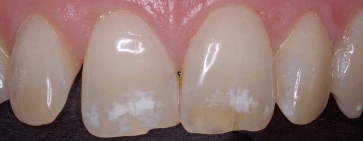
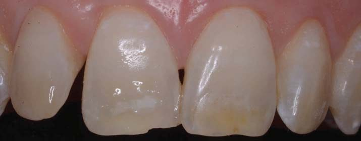
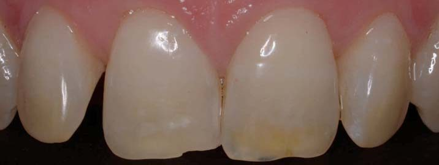
Техніку інфільтрації смолою було запропоновано як спосіб зменшення розміру каріозних уражень емалі (Paris і співавт., 2010). За задумом, смола повинна проникнути в гіпомінералізовану емаль і припинити розвиток карієсу (Pharck і співавт., 2009). Ця техніка годиться для усунення карієсу на проксимальних і вестибулярних поверхнях (Kugel і співавт., 2009), але також був запропонований новий спосіб її застосування — для усунення білих плям та слідів на вестибулярних поверхнях фронтальних зубів. Інфільтрація смолою міжзубних ділянок була єдиним способом герметизації міжзубної поверхні і дозволяла краще затримувати розвиток карієсу. Завдяки інфільтрації смолою можна відтермінувати реставрацію, тому цей метод посів своє місце як проміжний етап між неінвазивними та інвазивними способами лікування.
Спочатку відповідну ділянку протравлюємо 15% соляною кислотою, і після цього наносимо на неї спирт. Потім смола інфільтрується в ураження і полімеризується. Уражена ділянка стає менш помітною, оскільки мікропори інфільтровані смолою (фото 1-3).
- невеликі вроджені білі плями на зубах;
- біла демінералізація вестибулярної поверхні зуба, наприклад, внаслідок затримки нальоту під час ортодонтичного лікування;
- великі за розміром білі плями і смуги на зубі;
- ураження, що виникли внаслідок гіпоплазії молярів та різців;
- гіпоплазійні плями, які виникли через травму;
- легкий або помірний флюороз;
- великі поодинокі смуги, що виникли внаслідок флюорозу.
Техніка інфільтрації смолою
Техніка складається з таких етапів:
- Етап підготовки. Поверхня зуба очищається, і на 2–5 хвилин наноситься 15% соляна кислота (фото 4).
- Для висушування і дегідратації на поверхню наносимо спирт на 2 хвилини (фото 5).
- Смолу TEGMA також наносимо на зуб з експозицією 2–5 хвилин (фото 6 а, б).
- Полімеризація поверхні зуба.
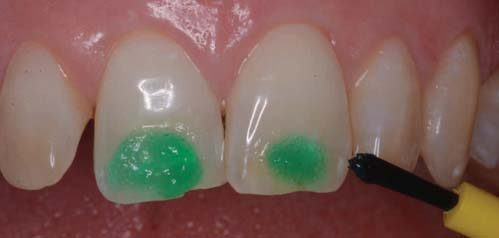
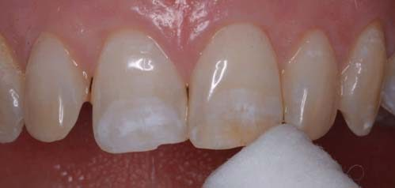
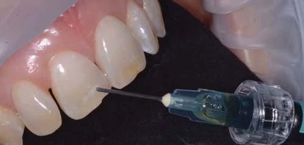
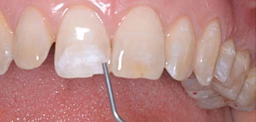
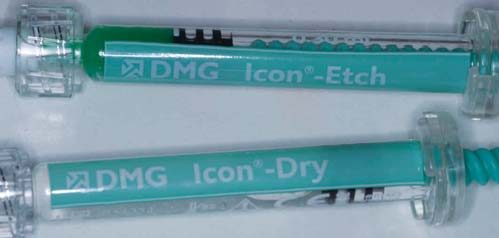
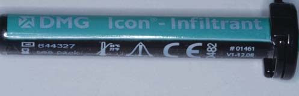
Покроковий підхід:
- Ізоляція. Гарна ізоляція — це необхідна умова, адже на першому етапі для протравлювання поверхні зуба використовується дуже сильна кислота. Щоб ізолювати зуби, можна скористатися рабердамом або ізоляційним ретрактором Optragate (ретрактор Optragate для губ і щік, Ivoclar Vivadent, Велика Британія).
- Для очищення поверхні зуба використана суміш пемзи і Hibiscrub.
- Якщо біла пляма дуже велика, можна безпосередньо зробити повітряно-абразивну обробку піскоструминним апаратом (фото 9-10).
- Етап підготовки. Якщо уражена ділянка розташована на передньому зубі, 15% соляну кислоту наносять на неї спеціальним аплікатором, схожим на невелику круглу губку (фото 10).
- Губку залишають на місці на 2–5 хвилин.
- Зуб промивають водою.
- Рідину в шприці, яка містить спирт, наносять безпосередньо на біле ураження. Потім висушують. Спирт наносять на поверхню ураження як засіб для просушування, щоб змінити рефракційний індекс поверхні емалі. Це допоможе зрозуміти, зникне біла пляма повністю після нанесення смоли чи потрібно буде ще раз обробити ураження піскоструминним апаратом і нанести на нього соляну кислоту.
- Смолу TEGMA наносять безпосередньо на висушену білу пляму.
- Експозиція на 2–5 хвилин.
- Полімеризація 30 секунд.
- Можна подивитися на результат і проаналізувати його.
- Фотореєстрація.
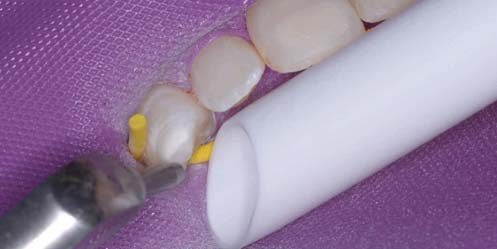
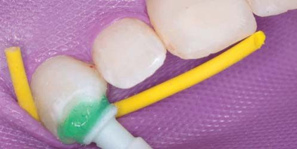
Чи варто спочатку відбілити зуб?
З урахуванням розміру ураженої ділянки, завжди спочатку слід зробити відбілювання, адже так можна зменшити розмір білої плями і всієї площі ураженої ділянки. Це означає, що для нанесення на зуб знадобиться менше смоли, оскільки велика частина білої плями буде видалена під час відбілювання.
Дослідження
У ході дослідження, яке провели Munoz і співавт. (2013), коли відповідні зуби були інфільтровані смолою, виявилося, що найвдалішим було лікування флюорозних плям. Різницю можна було помітити неозброєним оком. Ділянки гіпоплазії повністю не зникли. За словами дослідників, пацієнти знову відчули впевненість у собі, і тому лікування вважалося вдалим. Вплив соляної кислоти на емаль проаналізували Paris і співавт. (2010). Дослідники вивчили результат протравлювання тимчасових зубів соляною кислотою у порівнянні з фосфорною кислотою. Вони розглянули 36 пар молочних молярів з ураженнями на емалі і зробили протравлювання фосфорною і соляною кислотою, а потім розглянули результати в конфокальний мікроскоп. За їхніми даними, була помітна різниця між впливом двох кислот на поверхню зубів — соляна кислота забезпечила велику ерозію емалі, що дозволило інфільтрату проникнути глибше. Глибина ділянки, пенетрованої соляною кислотою, була вдвічі більша, ніж глибина ділянки, обробленої фосфорною кислотою. Фосфорна кислота протягом двох хвилин не може якісно протравити поверхню емалі. Можна припустити, що завдяки техніці інфільтрації смолою можна зменшити кількість довготермінових пломб, які потрібно встановити пацієнтові, і заощадити кошти. І це відповідає концепції мінімально інвазивного стоматологічного лікування.
Техніка інфільтрації смолою не завжди має наслідком повне зникнення білої плями ураження. Згодом вигляд зуба може поліпшитися. У ході дослідження, яке проводили Kim і співавт. (2011), для інфільтрації смолою відібрали 20 зубів з порушенням розвитку емалі і 18 зубів з демінералізацією після ортодонтичного лікування. Стандартизовані фотознімки було зроблено до, відразу після і через тиждень після лікування. Результати класифікували за трьома різними групами: «плями повністю замасковані», «плями частково замасковані» і «плями залишилися без змін». Аналіз зображень результатів з урахуванням Delta E засвідчив, що 5 (25%) зубів потрапили в категорію «плями повністю замасковані», тоді як 7 (35%) належали до категорії «плями частково замасковані» і 8 (40%) — до категорії «плями залишилися без змін». З групи зубів, на яких після ортодонтичного лікування спостерігалася демінералізація, 11 (61%) потрапили в категорію «плями повністю замасковані», 6 (33%) — у «плями частково замасковані» і 1 зуб (6%) — у категорію «плями залишилися без змін». У деяких зубах результат мав ліпший вигляд через тиждень після інфільтрації, ніж відразу після неї. За висновком дослідників, у деяких випадках плями були замасковані дуже добре, але в інших — ні. Вивчення довготермінових результатів вимагає додаткового дослідження.
Додаткове дослідження
Додаткове дослідження потрібне, оскільки існує низка питань, на які ми не отримали відповіді, наприклад: як можна визначити, які саме білі плями будуть замасковані повністю, а які — частково; чи варто робити відбілювання перед інфільтрацією смолою і чи поліпшить це кінцевий результат; який вплив має смола TEGMA на інші адгезивні техніки, буде адгезія такою ж міцною чи виявиться, що вона слабша?
Висновки
Завдяки технікам інфільтрації смолою вдалося відкрити нові способи мінімально інвазивного лікування білих плям. У міру просування додаткового дослідження ми будемо отримувати більше варіантів лікування з використанням техніки інфільтрації смолою. Це дасть нам можливість поліпшити результати естетичного лікування пацієнтів мінімально інвазивним способом і, відповідно, зовнішній вигляд пацієнтів, які страждають від таких дефектів.
Література
- Tirlet G, Attal JP. L'erosion/infiltration: une nouvelle therapeutique pour masque les taches blanches. Inf Dent 2011 4:12-16.
- Kugel G, Arsenault P, Papas A. Treatment modalities for caries management, including a new resin infiltration system. Compend Contin Educat Dent 2009. 3:1-10.
- Meyer-Lueckel H, Paris S. Improved resin infiltration of natural caries lesions. J Dent Res 2008 87:1112-1126.
- Munoz MA, Arana-Gordillo LA, Gomes GM, Gomes OM, Bombarda NH, Reis A, Loquercio AD (2013). Alternative Esthetic Management of Fluorosis and Hypoplasia Stains: Blending Effect Obtained with Resin Infiltration Techniques. J Esthet Restor Dent. Feb; 25 (1) 32-39.
- Pharck JH, Duarte S, Meyer Leuckel H, Paris S. (2009). Caries infiltration with resins. A novel treatment option for interproximal caries.
- Paris S, Dorfer CE, Meyer-Lueckel H (2010). Surface conditioning of natural enamel caries lesions in deciduous teeth in preparation for resin infiltration. Journal of Dentistry 38 (2010). 65-71.
- Paris S, Meyer-Lueckel H (2012). The potential for resin infiltration technique in dental Practice Dent Update. Nov; 39 (9): 623-6, 628.
- Kielbassa AM, Muller J, Gernhardt CR (2009). Closing the gap between oral hygiene and minimal invasive dentistry: a review on the resin infiltration technique of incipient (proximal) enamel lesions. Quintessence Int. Sep; 40 (8): 663-81.
- Kim S, Kim EY, Jeong TS, Kim JW (2011). The evaluation of resin infiltration for masking labial enamel white spot lesions. Int J paediatric Dent Jul; 21(4): 241-8.
- Greenwall L. H. (2009) White lesions and bleaching treatments. Aesthetic Dentistry Today Volume 3:2 page 15-18.
- Greenwall L. H. (2006) Combining home bleaching and microabrasion. Aesthetic and Implant Dentistry 8:3, 34-41.
- Abreu DR, Sasaki RS, Amaral FLB, Florio FM and Basting R (2011). Effect of Home-Use and In-Office Bleaching agents containing Hydrogen Peroxide Associated with Amorphous Calcium Phosphate on Enamel Microhardness and Surface Roughness. Journal of Esthetic and Restorative Dentistry 23:3 158-168.
- Lai PY, Seow WK, Tudehope DI, Rogers Y (1997). Enamel hypoplasia and dental caries in very-low birth-weight children: a case-controlled, longitudinal study. Pediatr Dent. Jan-Feb; 19 (1): 42-49.